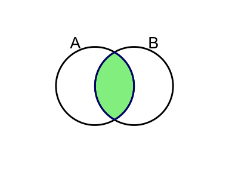
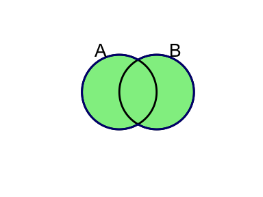
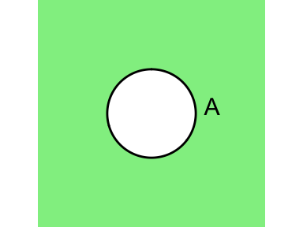
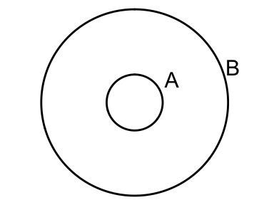

Introduction aux probabilités
Expériences aléatoires et espaces échantillonnaux
Lorsqu’on réalise une expérience aléatoire, on ne connaît pas avec certitude le résultat de cette expérience (d’où le nom expérience aléatoire). Par contre, en théories des probabilités, on sera en mesure de supposer qu’on connaît les résultats possibles de cette expérience. Par exemple, lorsqu’on lance un dé régulier à 6 faces, on sait que tous les résultats possibles sont \(\{1,2,3,4,5,6\}\).
DÉFINITION: L’ensenble de tous les résultats possibles d’une expérience aléatoire est appeléespace échantillonnal.
Afin de décrire mathématiquement (ou plus formellement) ces concepts, nous introduirons des éléments de notation.
- \(\mathcal{E}\): expérience aléatoire;
- \(\mathcal{U}\), \(\mathcal{S}\) ou \(\Omega\): espace échantillonnal.
Pour la suite, \(\mathcal{U}\) sera utilisé.
Souvent, lorsque plusieurs expériences aléatoires ont lieu, nous les noterons \(\mathcal{E}_1,\mathcal{E}_2,...\) et noterons leurs espaces échantillonnaux respectifs \(\mathcal{U}_1,\mathcal{U}_2,...\)
Exemple
- \(\mathcal{E}_1\): on lance un dé équilibré à 6 face et on note le résultat de la face du dessus;
- \(\mathcal{E}_2\): On lance une pièce de monnaie équilibrée et on note le résultat;
- \(\mathcal{E}_3\): On mesure en millimètres la quantité de pluie tombée au mois de septembre à Québec;
- \(\mathcal{E}_4\): On compte le nombre de visiteurs dans un musée pendant une heure donnée.
Les espaces échantillonnaux associés:
- \(\mathcal{U}_1\): \(\{1,2,3,4,5,6\}\);
- \(\mathcal{U}_2\): {Pile, Face};
- \(\mathcal{U}_3\): \([0, \infty[=\mathbb{R}^+\);
- \(\mathcal{U}_4\): \(\{0,1,2,...\}=\mathbb{N}\).
À noter: Pour \(\mathcal{U}_3\) et \(\mathcal{U}_4\), on parle d’infini. Cet infini est bien sûr théorique, nous n’aurons jamais une infinité de millimètres de pluie ou de visiteurs.
En étudiant les espaces échantillonnaux donnés en exemple, on voit qu’il existe deux types d’espaces échantillonnaux:
- Les espaces échantillonnaux discrets: si l’espace échantillonnal est dénombrable, comme \(\mathcal{U}_1\), \(\mathcal{U}_2\) et \(\mathcal{U}_4\);
- Les espaces échantillonnaux continus: si l’espace échantillonnal est non dénombrable, comme \(\mathcal{U}_3\).
On parle d’un ensemble dénombrable lorsqu’il est possible de faire une liste de ses éléments sans en oublier.
DÉFINITION: Un sous-ensemble de l’espace échantillonnal \(\mathcal{U}\) est appelé unévénement.
Un événement sera dénoté par une lettre majuscule. Généralement, les lettres utilisées sont les premières de l’alphabet (les dernières sont généralement utilisées pour les variables aléatoires, qui sont vues plus loin), mais il est possible d’utiliser d’autres lettres, pour faciliter la compréhension. Quelques exemples en utilisant les expériences définies plus haut:
- Pour \(\mathcal{E}_1\), \(A=\) “le dé affiche un 5 ou un 6”;
- Pour \(\mathcal{E}_2\), \(B=\) “la pièce de monnaie affiche Pile”;
- Pour \(\mathcal{E}_3\), \(C=\) “Il tombe entre 150mm et 200mm de pluie”;
- Pour \(\mathcal{E}_4\), \(D=\) “Aucun visiteur ne s’est présenté”.
Nous pourrions aussi noter les événements comme ceci:
- \(A=\{5, 6\}\);
- \(B=\{\text{Pile}\}\);
- \(C=[150, 200]\);
- \(D=\{0\}\).
Opérations sur les ensembles
- Intersection de \(A\) et \(B\): \(A\cap B\)
- Union de \(A\) et \(B\): \(A\cup B\)

- Complément de \(A\): \(\overline{A}\)

- Inclusion de \(A\) dans \(B\): \(A\subset B\)

\usepackage{tikz}
\begin{document}
\begin{tikzpicture}
\draw (0,0) -- (2,2);
\draw (0,0) -- (2,0);
\draw (0,0) -- (0,2);
\draw (0,2) -- (2,2) -- (2,0);
\end{tikzpicture}
fgkgkjgjg
\end{document}DÉFINITION: Des événements qui n’ont aucune intersection sontmutuellement exclusifs.
Ceci veut dire qu’un seul de ces événements peut se produire à la fois.
Par exemple, \(A\), \(B\) et \(C\) sont mutuellement exclusifs si
- \(A\cap B=\emptyset\);
- \(A\cap C=\emptyset\);
- \(B\cap C=\emptyset\);
- \(A\cap B \cap C=\emptyset\).
Quiz
Soit l’expérience aléatoire \(\mathcal{E}_1\), qui consiste à noter le résultat d’un dé équilibré à 6 faces et les événements suivants:
- \(A\): le résultat est un nombre pair;
- \(B\): le résultat est un nombre impair;
- \(C\): le résultat est strictement supérieur à 3;
- \(D\): le résultat s’écrit en lettres avec un «u»;
- \(E\): le résultat est un 5.
Trouvez toutes les combinaisons d’événements mutuellement exclusifs.